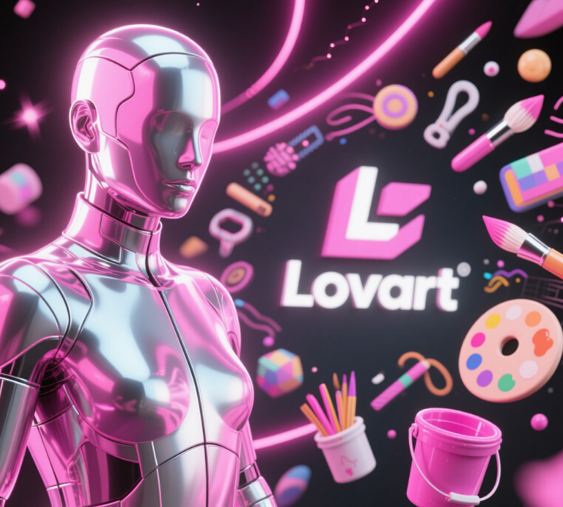

AI全部新闻列表
汇聚AI领域最新动态、研究进展和行业洞察，助您把握技术前沿
排序:

发布于 2025-05-19
Qwen Deep Research：让复杂研究变得简单高效
面对海量信息和高强度的任务压力，系统地研究一件事变得费时且难以聚焦。你可能想找个靠谱的「助手」，帮你梳理复杂问题，快速理清头绪，甚至直接生成一份条理清晰、数据可信的研究报告。
2.3k
阅读更多
发布于 2025-05-18
AI语音的Her Moment：个性化交互达到临界点
AI语音的 Her Moment 正在逐渐逼近。当无数智能体与硬件设备，以前所未有的方式进入我们的生活，AI语音交互也应声迎来爆发式的增长。大量终端、客户和创作者的个性化需求，需要同一套底层模型来规模化满足，在自然、富有温度的语音体验之外，「个性化语音」必须被解决。
1.8k
阅读更多

发布于 2025-05-17
美国商务部废除拜登签署的《AI扩散规则》，并要求全球不准使用华为AI芯片
美国前总统拜登签署的《AI扩散规则》在生效之前被暂停。5月13日消息，钛媒体AGI获悉，就在刚刚，美国商务部正式发布文件，启动撤销拜登签署的《AI扩散规则》，同时宣布采取额外措施加强对全球芯片出口管制。
1.5k
阅读更多
发布于 2025-05-16
OpenAI最强编程智能体上线ChatGPT
就在刚刚，谜底揭晓！OpenAI 宣布，在 ChatGPT 中引入了 Codex 的研究预览版。Codex 是一个云端软件工程智能体，可以并行处理多项任务，包括编写功能、解答代码库相关问题、修复 bug 以及提交拉取请求以供审核等。并且，每个任务都在其专属的云沙盒环境中运行，并预加载代码库。
2.1k
阅读更多
发布于 2025-05-15
鹅厂把文生图卷出新高度：混元图像2.0实现毫秒级响应，边说边画
刚刚，鹅厂把文生图卷出了新高度——发布混元图像2.0模型（Hunyuan Image 2.0），首次实现毫秒级响应，边说边画，实时生成！用户一边描述，它紧跟着绘制，整个过程那叫一个丝滑。不用等待，专治各种没有耐心。
1.9k
阅读更多

发布于 2025-05-14
新晋顶流Agent颠覆设计师！Lovart一手实测来了：是该刷屏爆火
又一个Agent火爆全网——一句话搞定专业视觉设计，就连专业设计师大V都在疯狂安利！
1.1k
阅读更多